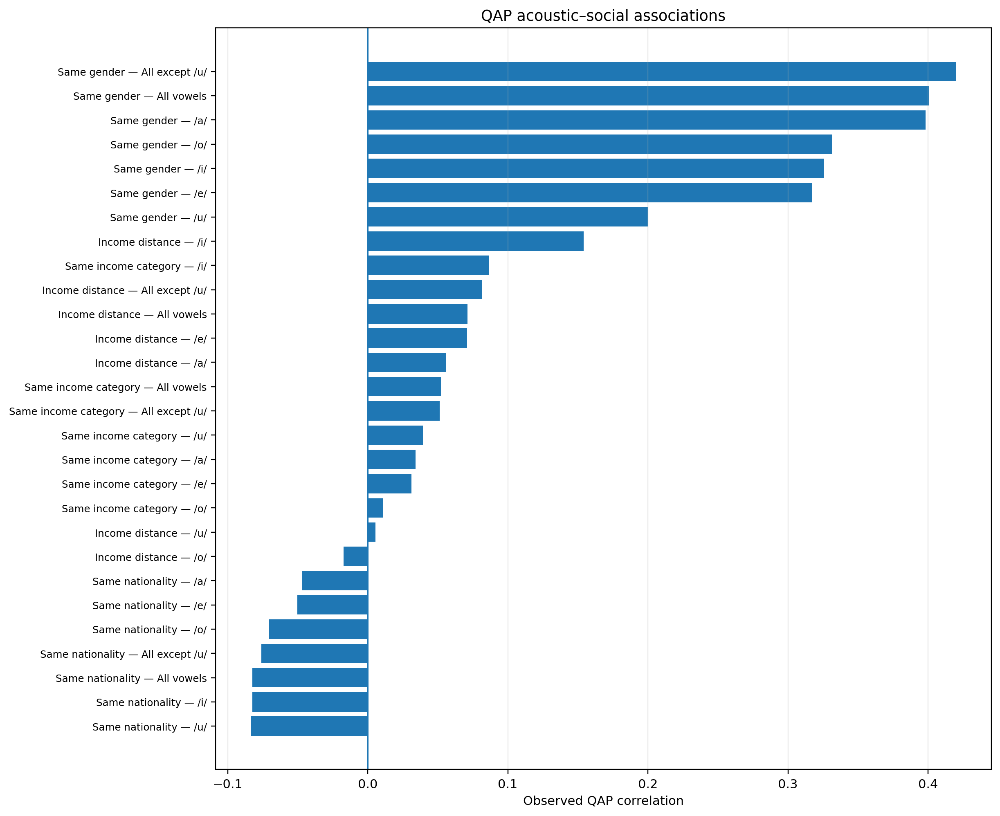
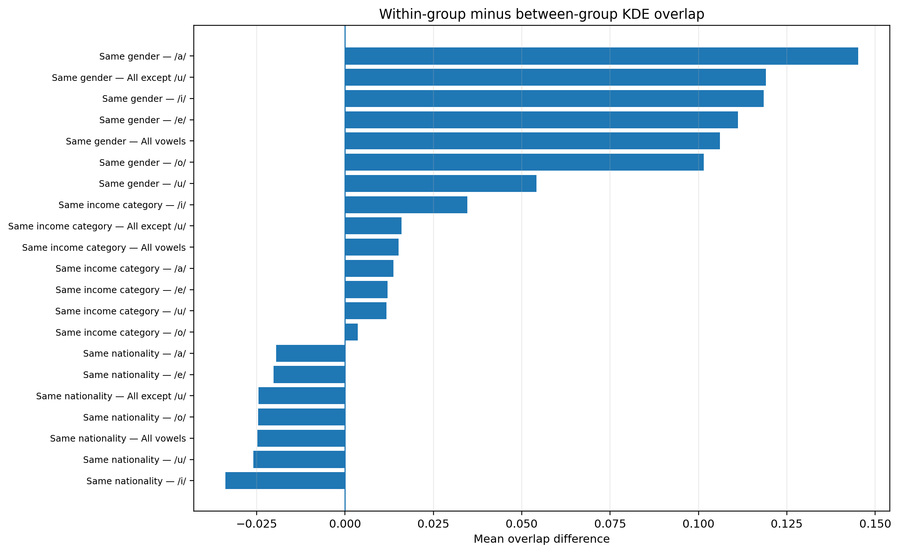
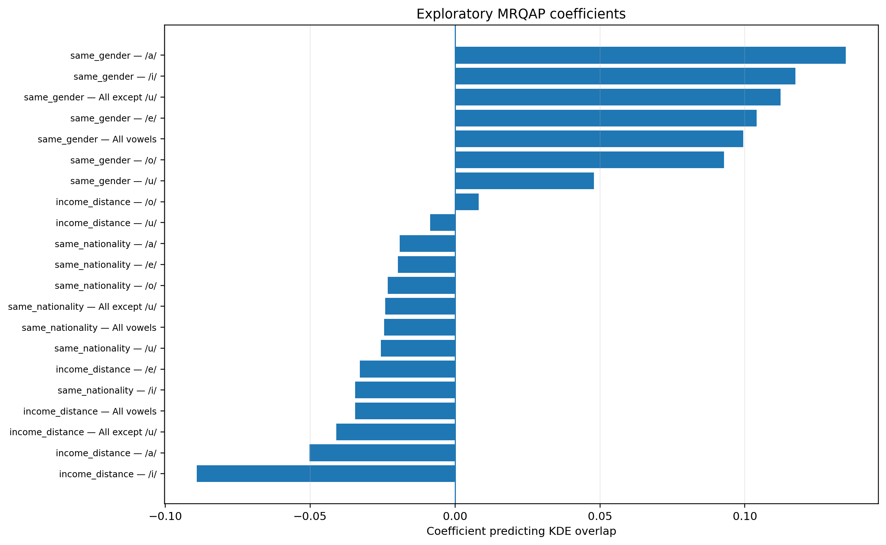

This report tests whether socially similar speaker pairs also have more similar KDE density distributions.
Largest bivariate association: Same gender, All except /u/, r=0.420, p=0.0001, q=0.0009.
8 bivariate result(s) survived global FDR q<.05.
6 adjusted MRQAP coefficient(s) survived global FDR q<.05.
/home/pires/projects/speech-research/results/kde_3d_by_vowel_speaker/kde_pairwise_overlap.csv/home/pires/projects/speech-research/data/raw/social_metadata.csv
10,000 permutations; seed 20260721.
| role | column |
|---|---|
| ID | Time.code.and.speaker |
| Gender | Sex |
| Nationality | CountryRes |
| Income | Income_group |
| Income ordering | numeric |


| matrix | social_variable | test_type | expected_direction | n_speakers | n_pairs | n_within_pairs | n_between_pairs | correlation | mean_within_overlap | mean_between_overlap | within_minus_between | p_two_sided | p_expected_direction | q_global_two_sided | q_global_expected_direction | q_within_variable |
|---|---|---|---|---|---|---|---|---|---|---|---|---|---|---|---|---|
| /a/ | Same gender | Same-category Pearson QAP | positive | 43 | 903 | 573.0000 | 330.0000 | 0.3981 | 0.3869 | 0.2417 | 0.1452 | 0.0001 | 0.0001 | 0.0009 | 0.0009 | 0.0002 |
| All vowels | Same gender | Same-category Pearson QAP | positive | 43 | 903 | 573.0000 | 330.0000 | 0.4007 | 0.4357 | 0.3296 | 0.1061 | 0.0001 | 0.0001 | 0.0009 | 0.0009 | 0.0002 |
| All except /u/ | Same gender | Same-category Pearson QAP | positive | 43 | 903 | 573.0000 | 330.0000 | 0.4199 | 0.4230 | 0.3039 | 0.1191 | 0.0001 | 0.0001 | 0.0009 | 0.0009 | 0.0002 |
| /o/ | Same gender | Same-category Pearson QAP | positive | 43 | 903 | 573.0000 | 330.0000 | 0.3313 | 0.4217 | 0.3202 | 0.1015 | 0.0003 | 0.0003 | 0.0021 | 0.0021 | 0.0005 |
| /i/ | Same gender | Same-category Pearson QAP | positive | 43 | 903 | 573.0000 | 330.0000 | 0.3254 | 0.4892 | 0.3707 | 0.1185 | 0.0005 | 0.0005 | 0.0028 | 0.0028 | 0.0007 |
| /e/ | Same gender | Same-category Pearson QAP | positive | 43 | 903 | 573.0000 | 330.0000 | 0.3170 | 0.3943 | 0.2831 | 0.1112 | 0.0006 | 0.0006 | 0.0028 | 0.0028 | 0.0007 |
| /i/ | Income distance | Ordinal-distance Spearman QAP | positive | 43 | 903 | NA | NA | 0.1542 | NA | NA | NA | 0.0118 | 0.0110 | 0.0458 | 0.0420 | 0.0826 |
| /u/ | Same gender | Same-category Pearson QAP | positive | 43 | 903 | 573.0000 | 330.0000 | 0.2003 | 0.4862 | 0.4321 | 0.0541 | 0.0131 | 0.0120 | 0.0458 | 0.0420 | 0.0131 |
| /i/ | Same income category | Same-category Pearson QAP | positive | 43 | 903 | 236.0000 | 667.0000 | 0.0866 | 0.4715 | 0.4369 | 0.0346 | 0.0168 | 0.0168 | 0.0523 | 0.0523 | 0.1176 |
| All vowels | Same income category | Same-category Pearson QAP | positive | 43 | 903 | 236.0000 | 667.0000 | 0.0521 | 0.4081 | 0.3929 | 0.0151 | 0.1256 | 0.0816 | 0.3138 | 0.1941 | 0.2949 |
| All except /u/ | Same income category | Same-category Pearson QAP | positive | 43 | 903 | 236.0000 | 667.0000 | 0.0514 | 0.3913 | 0.3753 | 0.0160 | 0.1264 | 0.0798 | 0.3138 | 0.1941 | 0.2949 |
| All except /u/ | Income distance | Ordinal-distance Spearman QAP | positive | 43 | 903 | NA | NA | 0.0817 | NA | NA | NA | 0.1502 | 0.0832 | 0.3138 | 0.1941 | 0.3710 |
| /u/ | Same nationality | Same-category Pearson QAP | positive | 41 | 820 | 191.0000 | 629.0000 | -0.0834 | 0.4417 | 0.4676 | -0.0260 | 0.1647 | 0.9230 | 0.3138 | 0.9313 | 0.3255 |
| All vowels | Same nationality | Same-category Pearson QAP | positive | 41 | 820 | 191.0000 | 629.0000 | -0.0823 | 0.3745 | 0.3994 | -0.0248 | 0.1664 | 0.9313 | 0.3138 | 0.9313 | 0.3255 |
| /i/ | Same nationality | Same-category Pearson QAP | positive | 41 | 820 | 191.0000 | 629.0000 | -0.0823 | 0.4245 | 0.4583 | -0.0338 | 0.1681 | 0.9232 | 0.3138 | 0.9313 | 0.3255 |
| /e/ | Income distance | Ordinal-distance Spearman QAP | positive | 43 | 903 | NA | NA | 0.0710 | NA | NA | NA | 0.1974 | 0.1034 | 0.3297 | 0.2227 | 0.3710 |
| All except /u/ | Same nationality | Same-category Pearson QAP | positive | 41 | 820 | 191.0000 | 629.0000 | -0.0760 | 0.3578 | 0.3823 | -0.0245 | 0.2044 | 0.9084 | 0.3297 | 0.9313 | 0.3255 |
| All vowels | Income distance | Ordinal-distance Spearman QAP | positive | 43 | 903 | NA | NA | 0.0713 | NA | NA | NA | 0.2120 | 0.1125 | 0.3297 | 0.2250 | 0.3710 |
| /o/ | Same nationality | Same-category Pearson QAP | positive | 41 | 820 | 191.0000 | 629.0000 | -0.0707 | 0.3582 | 0.3828 | -0.0246 | 0.2325 | 0.8884 | 0.3426 | 0.9313 | 0.3255 |
| /u/ | Same income category | Same-category Pearson QAP | positive | 43 | 903 | 236.0000 | 667.0000 | 0.0395 | 0.4751 | 0.4634 | 0.0117 | 0.2573 | 0.1356 | 0.3602 | 0.2531 | 0.4133 |
| /a/ | Same income category | Same-category Pearson QAP | positive | 43 | 903 | 236.0000 | 667.0000 | 0.0342 | 0.3439 | 0.3302 | 0.0137 | 0.3169 | 0.1554 | 0.4225 | 0.2719 | 0.4133 |
| /e/ | Same income category | Same-category Pearson QAP | positive | 43 | 903 | 236.0000 | 667.0000 | 0.0313 | 0.3626 | 0.3505 | 0.0120 | 0.3543 | 0.1752 | 0.4348 | 0.2725 | 0.4133 |
| /a/ | Income distance | Ordinal-distance Spearman QAP | positive | 43 | 903 | NA | NA | 0.0558 | NA | NA | NA | 0.3572 | 0.1722 | 0.4348 | 0.2725 | 0.5000 |
| /e/ | Same nationality | Same-category Pearson QAP | positive | 41 | 820 | 191.0000 | 629.0000 | -0.0502 | 0.3360 | 0.3562 | -0.0202 | 0.3735 | 0.8138 | 0.4357 | 0.9313 | 0.4324 |
| /a/ | Same nationality | Same-category Pearson QAP | positive | 41 | 820 | 191.0000 | 629.0000 | -0.0470 | 0.3123 | 0.3319 | -0.0195 | 0.4324 | 0.7747 | 0.4842 | 0.9313 | 0.4324 |
| /o/ | Same income category | Same-category Pearson QAP | positive | 43 | 903 | 236.0000 | 667.0000 | 0.0107 | 0.3873 | 0.3836 | 0.0036 | 0.7616 | 0.3504 | 0.7924 | 0.5163 | 0.7616 |
| /o/ | Income distance | Ordinal-distance Spearman QAP | positive | 43 | 903 | NA | NA | -0.0172 | NA | NA | NA | 0.7641 | 0.5981 | 0.7924 | 0.7975 | 0.8915 |
| /u/ | Income distance | Ordinal-distance Spearman QAP | positive | 43 | 903 | NA | NA | 0.0055 | NA | NA | NA | 0.9273 | 0.4499 | 0.9273 | 0.6298 | 0.9273 |
The model predicts pairwise KDE overlap from all available social matrices simultaneously. Its p-values use node-label matrix permutations. Ordinary OLS standard errors are descriptive only.

| matrix | predictor | coefficient | standard_error_ols | t_statistic | p_two_sided_permutation | p_expected_direction | expected_sign | q_global_two_sided | q_within_predictor |
|---|---|---|---|---|---|---|---|---|---|
| All vowels | same_gender | 0.0994 | 0.0085 | 11.7577 | 0.0001 | 0.0001 | positive | 0.0014 | 0.0005 |
| /a/ | same_gender | 0.1348 | 0.0117 | 11.5126 | 0.0002 | 0.0002 | positive | 0.0014 | 0.0005 |
| All except /u/ | same_gender | 0.1123 | 0.0090 | 12.5252 | 0.0002 | 0.0002 | positive | 0.0014 | 0.0005 |
| /o/ | same_gender | 0.0928 | 0.0101 | 9.2158 | 0.0005 | 0.0005 | positive | 0.0024 | 0.0008 |
| /i/ | same_gender | 0.1174 | 0.0117 | 10.0707 | 0.0006 | 0.0006 | positive | 0.0024 | 0.0008 |
| /e/ | same_gender | 0.1041 | 0.0117 | 8.9091 | 0.0007 | 0.0007 | positive | 0.0024 | 0.0008 |
| /u/ | same_gender | 0.0479 | 0.0093 | 5.1427 | 0.0256 | 0.0213 | positive | 0.0690 | 0.0256 |
| /i/ | income_distance | -0.0891 | 0.0210 | -4.2519 | 0.0263 | 0.0227 | negative | 0.0690 | 0.1841 |
| /i/ | same_nationality | -0.0345 | 0.0134 | -2.5780 | 0.1377 | 0.9449 | positive | 0.2877 | 0.3069 |
| All vowels | same_nationality | -0.0244 | 0.0097 | -2.5166 | 0.1392 | 0.9423 | positive | 0.2877 | 0.3069 |
| All except /u/ | same_nationality | -0.0241 | 0.0103 | -2.3450 | 0.1694 | 0.9288 | positive | 0.2877 | 0.3069 |
| /u/ | same_nationality | -0.0256 | 0.0107 | -2.3924 | 0.1754 | 0.9180 | positive | 0.2877 | 0.3069 |
| All except /u/ | income_distance | -0.0410 | 0.0161 | -2.5442 | 0.1781 | 0.0958 | negative | 0.2877 | 0.4170 |
| /a/ | income_distance | -0.0502 | 0.0211 | -2.3846 | 0.2113 | 0.1114 | negative | 0.3127 | 0.4170 |
| /o/ | same_nationality | -0.0232 | 0.0116 | -2.0112 | 0.2306 | 0.8932 | positive | 0.3127 | 0.3228 |
| All vowels | income_distance | -0.0345 | 0.0152 | -2.2716 | 0.2383 | 0.1239 | negative | 0.3127 | 0.4170 |
| /e/ | same_nationality | -0.0197 | 0.0134 | -1.4692 | 0.3716 | 0.8134 | positive | 0.4454 | 0.4207 |
| /e/ | income_distance | -0.0328 | 0.0210 | -1.5617 | 0.3818 | 0.1871 | negative | 0.4454 | 0.5345 |
| /a/ | same_nationality | -0.0191 | 0.0134 | -1.4186 | 0.4207 | 0.7803 | positive | 0.4649 | 0.4207 |
| /u/ | income_distance | -0.0086 | 0.0168 | -0.5151 | 0.7950 | 0.3860 | negative | 0.8139 | 0.8139 |
| /o/ | income_distance | 0.0081 | 0.0181 | 0.4478 | 0.8139 | 0.5778 | negative | 0.8139 | 0.8139 |
| matrix | n_speakers | n_pairs | predictors | r_squared | global_p | status |
|---|---|---|---|---|---|---|
| /i/ | 41 | 820 | same_gender, same_nationality, income_distance | 0.1370 | 0.0004 | OK |
| /e/ | 41 | 820 | same_gender, same_nationality, income_distance | 0.0947 | 0.0008 | OK |
| /a/ | 41 | 820 | same_gender, same_nationality, income_distance | 0.1489 | 0.0002 | OK |
| /o/ | 41 | 820 | same_gender, same_nationality, income_distance | 0.0988 | 0.0005 | OK |
| /u/ | 41 | 820 | same_gender, same_nationality, income_distance | 0.0387 | 0.0451 | OK |
| All vowels | 41 | 820 | same_gender, same_nationality, income_distance | 0.1573 | 0.0001 | OK |
| All except /u/ | 41 | 820 | same_gender, same_nationality, income_distance | 0.1740 | 0.0001 | OK |
| variable | source_column | category | n_speakers | retained |
|---|---|---|---|---|
| gender | Sex | m | 33 | True |
| gender | Sex | f | 10 | True |
| nationality | CountryRes | ve | 17 | True |
| nationality | CountryRes | co | 8 | True |
| nationality | CountryRes | pe | 5 | True |
| nationality | CountryRes | ar | 5 | True |
| nationality | CountryRes | ec | 4 | True |
| nationality | CountryRes | do | 2 | True |
| nationality | CountryRes | sv | 1 | False |
| nationality | CountryRes | py | 1 | False |
| income | Income_group | 3 | 15 | True |
| income | Income_group | 2 | 12 | True |
| income | Income_group | 4 | 11 | True |
| income | Income_group | 1 | 5 | True |
| acoustic_id | status | metadata_row | metadata_id |
|---|---|---|---|
| 061ea7d0-Audio_SP16 | matched | 20 | 061ea7d0-Audio_SP16 |
| 0af9ac47-Audio_SP14 | matched | 16 | 0af9ac47-Audio_SP14 |
| 0e6115f2-Audio_SP19 | matched | 38 | 0e6115f2-Audio_SP19 |
| 0f786745-Audio_SP20 | matched | 25 | 0f786745-Audio_SP20 |
| 12c532f8-Audio_SP15 | matched | 0 | 12c532f8-Audio_SP15 |
| 181d5ce9-Audio_SP21 | matched | 13 | 181d5ce9-Audio_SP21 |
| 1c403477-Audio_SP13 | matched | 35 | 1c403477-Audio_SP13 |
| 1d46eb6e-Audio_SP18 | matched | 41 | 1d46eb6e-Audio_SP18 |
| 2988c6fc-Audio_SP13 | matched | 36 | 2988c6fc-Audio_SP13 |
| 2e25304d-Audio_SP12 | matched | 26 | 2e25304d-Audio_SP12 |
| 30a90cb2-Audio_SP21 | matched | 24 | 30a90cb2-Audio_SP21 |
| 3361ee02-Audio_SP10 | matched | 21 | 3361ee02-Audio_SP10 |
| 34ad326e-Audio_SP7 | matched | 8 | 34ad326e-Audio_SP7 |
| 375a28cd-Audio_SP16 | matched | 6 | 375a28cd-Audio_SP16 |
| 42d56bbf-Audio_SP23 | matched | 11 | 42d56bbf-Audio_SP23 |
| 49ae7020-Audio_SP17 | matched | 3 | 49ae7020-Audio_SP17 |
| 501e6487-Audio_SP19 | matched | 32 | 501e6487-Audio_SP19 |
| 514fc6b6-Audio_SP19 | matched | 1 | 514fc6b6-Audio_SP19 |
| 51a17262-Audio_SP18 | matched | 14 | 51a17262-Audio_SP18 |
| 5278b5b9-Audio_SP15 | matched | 33 | 5278b5b9-Audio_SP15 |
| 5586979c-Audio_SP18 | matched | 37 | 5586979c-Audio_SP18 |
| 5819ce7a-Audio_SP11 | matched | 34 | 5819ce7a-Audio_SP11 |
| 5a932187-audio_SP16 | matched | 10 | 5a932187-audio_SP16 |
| 63239054-Audio_SP15 | matched | 18 | 63239054-Audio_SP15 |
| 713a2f9b-Audio_SP16 | matched | 22 | 713a2f9b-Audio_SP16 |
| 7a414497-Audio_SP15 | matched | 9 | 7a414497-Audio_SP15 |
| 7aee4437-Audio_SP12 | matched | 2 | 7aee4437-Audio_SP12 |
| 7c3c98d2-Audio_SP13 | matched | 30 | 7c3c98d2-Audio_SP13 |
| 7dec1dd7-Audio_SP13 | matched | 17 | 7dec1dd7-Audio_SP13 |
| 7e277fda-Audio_SP28 | matched | 42 | 7e277fda-Audio_SP28 |
| 85c7895f-Audio_SP16 | matched | 31 | 85c7895f-Audio_SP16 |
| 919b9bc1-Audio_SP14 | matched | 27 | 919b9bc1-Audio_SP14 |
| 9a0c18cb-Audio_SP14 | matched | 23 | 9a0c18cb-Audio_SP14 |
| a1a056ce-Audio_SP11 | matched | 4 | a1a056ce-Audio_SP11 |
| a452055c-Audio_SP11 | matched | 29 | a452055c-Audio_SP11 |
| adad0062-Audio_SP17 | matched | 5 | adad0062-Audio_SP17 |
| c3533b36-Audio_SP16 | matched | 19 | c3533b36-Audio_SP16 |
| cafd9c21-Audio_SP27 | matched | 40 | cafd9c21-Audio_SP27 |
| d4c363bf-Audio_SP13 | matched | 7 | d4c363bf-Audio_SP13 |
| dbeec025-Audio_SP13 | matched | 39 | dbeec025-Audio_SP13 |
| e90f8e4d-Audio_SP22 | matched | 12 | e90f8e4d-Audio_SP22 |
| f061152e-Audio_SP12 | matched | 15 | f061152e-Audio_SP12 |
| fcd45f4d-Audio_SP21 | matched | 28 | fcd45f4d-Audio_SP21 |
| column | match_rate | selected |
|---|---|---|
| Time.code.and.speaker | 1.0000 | True |
| Part | 0.0000 | False |
| InfoInterv | 0.0000 | False |
| Time.code.and.speaker.2 | 0.0000 | False |
| Speaker | 0.0000 | False |
| Sex | 0.0000 | False |
| Age | 0.0000 | False |
| CivilStatus | 0.0000 | False |
| CountryRes | 0.0000 | False |
| MigrationStatus | 0.0000 | False |
| Location | 0.0000 | False |
| Education | 0.0000 | False |
| Discipline | 0.0000 | False |
| English | 0.0000 | False |
| EmploymentStatus | 0.0000 | False |
| Type_mw_earnings | 0.0000 | False |
| Amount_mw_earnings | 0.0000 | False |
| Income_group | 0.0000 | False |